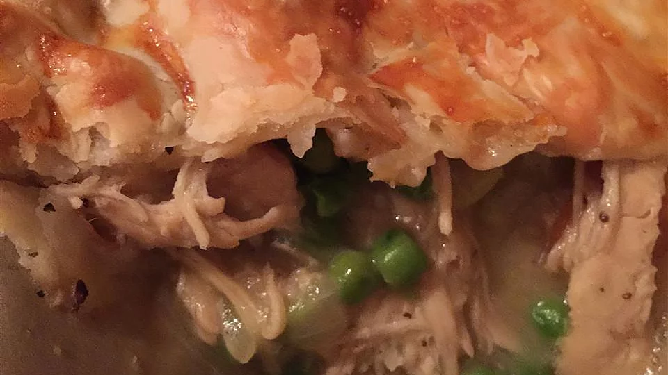

Chicken pox pi

Description
chicken pox is an Italian food. But well known internationally
Ingriedentts
- a pound of ground beef
- a pinch salt and ground black pepper to taset
- a can condensed cream of mushroom soup
- two caps shredded cheddar cheese
- a package frozen tater tots
Steps
- Preheaat overn to 350 F
- Cook and stir ground beef in a large skillet over medium heat
until no longer pink and completely browned, 7 to 10 minutes;
season with salt and black pepper. Stir cream of mushroom soup
into the cooked ground beef; pour the mixture into a 9x13-inch
baking dish. Layer tater tots evenly over
the ground beef mixture; top with Cheddar cheese.
- Bake until tater tots are golden brown and hot, 30 to 45 minutes.